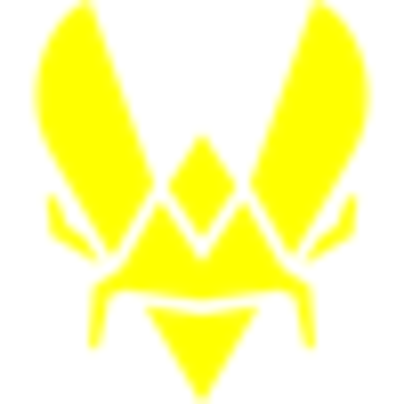
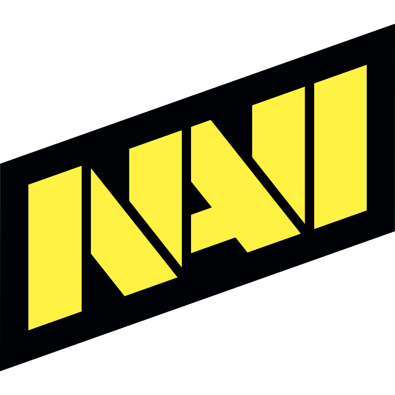
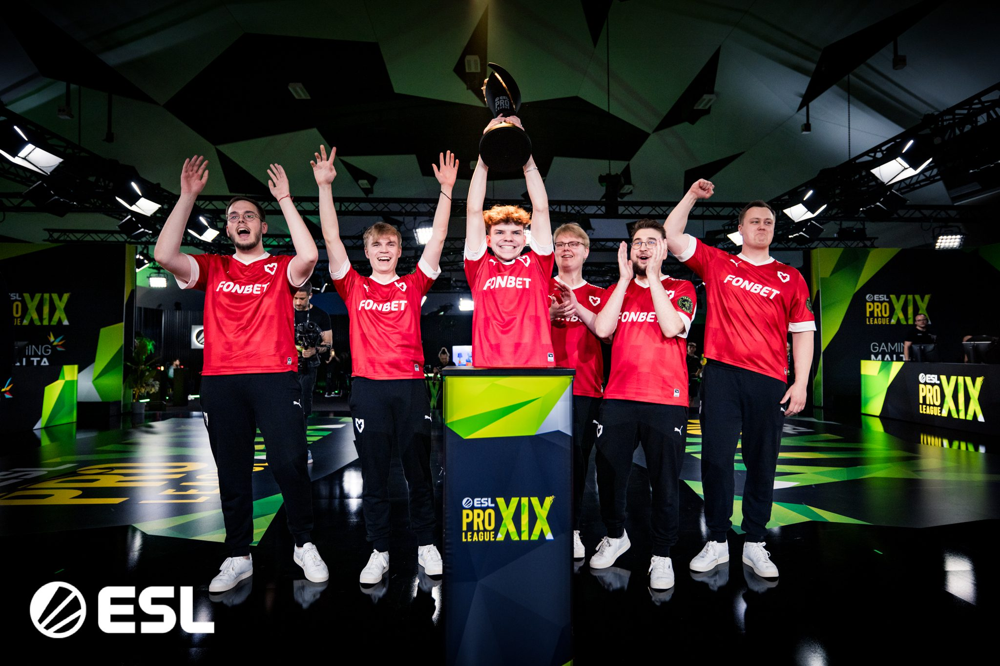

O cenário competitivo de Counter-Strike 2
O cenário de eSports no Brasil tem crescido de forma acelerada nos últimos anos, consolidando o país como um dos maiores públicos do mundo, com milhões de espectadores e uma comunidade extremamente engajada.
Dentro desse cenário, o Counter-Strike sempre teve um papel central, sendo um dos principais responsáveis por popularizar os esportes eletrônicos no país. Desde as versões antigas do jogo, o Brasil revelou grandes jogadores e equipes que ganharam destaque internacional, fortalecendo a identidade competitiva nacional.
Com a chegada do Counter-Strike 2, essa relevância se mantém e até se intensifica, com novas gerações de jogadores, maior investimento nas organizações e resultados expressivos em competições internacionais, reforçando o Brasil como uma potência global no cenário competitivo.
Ranking das Equipes
| Equipes | Periodo de maior destaque | Jogador de Destaque |
|---|---|---|
 |
2023 | ZywOo |
 |
2020 | KSCERATO |
 |
2021 | S1mple |
 |
2024 | M0NESY |
 |
2026-2025 | XertioN |
| Dados obtidos por: HLTV | ||
The Road to Glory
Time francês liderado por ZywOo. Em 2025 fizeram história vencendo 2 Majors consecutivos, feito que não acontecia desde Astralis em 2019.
 🏆 IEM Chengdu 2025
🏆 IEM Chengdu 2025
Orgulho brasileiro liderado por FalleN e KSCERATO. Venceram o IEM Chengdu 2025 derrotando a Vitality na grande final, mostrando que o Brasil ainda é potência no CS2.
 🏆 GL Major Copenhagen 2024
🏆 GL Major Copenhagen 2024
Organização histórica ucraniana. Venceram o primeiro Major de CS2 da história em Copenhagen 2024, com s1mple como lenda do time em eras anteriores.
 🏆 BLAST Rivals Hong Kong 2025
🏆 BLAST Rivals Hong Kong 2025
Supertime saudita com m0NESY e NiKo no elenco. Consistentemente entre os 4 melhores do mundo em 2025, com 9 top-4 no ano.

🏆 ESL Pro League Season 19Time alemão campeão back-to-back da ESL Pro League (S18 e S19). Aposta em jovens talentos com xertioN e torzsi, consistentemente entre os melhores do mundo.